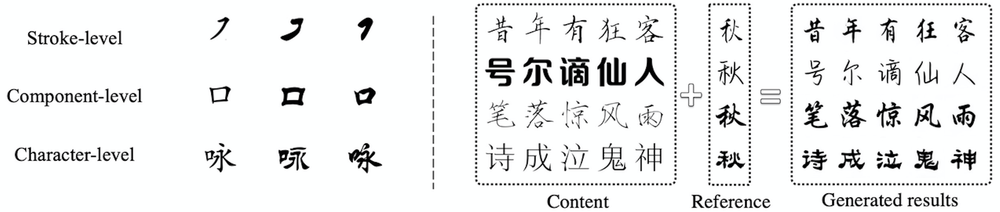

Background

A complete Chinese font includes tens of thousands of Chinese characters, hundreds of different Chinese character components and completely different arrangement and combination methods.
This makes designing a set of Chinese fonts extremely costly in terms of manpower, time and money.
However, because Chinese character fonts have strict requirements on the number, position and frame structure of strokes, general image translation models do not have a deep enough understanding of Chinese characters,
and the frame structure of fonts is also a type of style information, which leads to the generation of most Chinese characters.
The effect is not satisfactory. For some more difficult tasks, such as calligraphy font repair or when there are only a very small number of reference characters, the success rate of previous font generation methods is low.
In order to solve this problem, the XMP-Font proposed by the ByteDance intelligent creation team achieved a breakthrough effect and was published in CVPR2022.
Overview Video
Paper Details
Framework
(1) Pre-training stage: Pre-train a BERT-based cross-modal (text image and stroke order information) feature extraction model, and use the reconstruction loss and stroke prediction loss to ensure that the extracted font features can be extracted without losing information. Fully understand the relationship between strokes. In order to enable the model to understand the relationship between the picture and the corresponding Chinese character stroke order, we train on a large dataset with the following tasks:
1. Predict the stroke order that is covered
2. Image reconstruction
When the pre-training phase is completed, Chinese characters in any font can be perfectly reconstructed, and the overlaid stroke order prediction accuracy rate can reach more than 80%.
(2) Font generation stage: The features of the source domain word and the reference word are extracted respectively through the pre-trained feature extractor, and the decoupling and recombination is performed to finally generate the source domain word with the same font as the reference glyph. In this phase, the encoder of the pre-trained part is fixed, and only the decoupled network and decoder are trained.
1. Predict the stroke order that is covered
2. Image reconstruction
When the pre-training phase is completed, Chinese characters in any font can be perfectly reconstructed, and the overlaid stroke order prediction accuracy rate can reach more than 80%.
(2) Font generation stage: The features of the source domain word and the reference word are extracted respectively through the pre-trained feature extractor, and the decoupling and recombination is performed to finally generate the source domain word with the same font as the reference glyph. In this phase, the encoder of the pre-trained part is fixed, and only the decoupled network and decoder are trained.
Common Character Generation

BibTeX
@article{liu2022xmp,
title={XMP-Font: Self-Supervised Cross-Modality Pre-training for Few-Shot Font Generation},
author={Liu, Wei and Liu, Fangyue and Din, Fei and He, Qian and Yi, Zili},
journal={arXiv preprint arXiv:2204.05084},
year={2022}
}